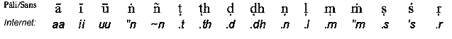

|
BuddhaSasana Home Page |
Vietnamese, with Unicode Times font |
PHẬT GIÁO NGUYÊN THỦY -THERAVÀDA
PL. 2539 - TL. 1995
|
[03] Thuở xưa có một vị vua của những người Va"nga sống tại kinh đô Va"nga, trong nước của những người Va"nga. Ðứa con gái của vị vua nước Ka"ni"nga là chánh hậu của vị vua ấy. Do bà chánh hậu, đức vua có một người con gái. Các nhà tiên tri đã tiên đoán rằng sau này nàng sẽ kết hôn với chúa của muôn thú. Nàng rất xinh đẹp và rất đa tình và vì xấu hổ đức vua và hoàng hậu không thể dung thứ cho nàng được. Nàng một mình từ nhà ra đi, vì ưa thích thú vui của đời sống độc lập; âm thầm không ai nhận ra được, nàng tháp tùng với một đoàn thương buôn đi đến nước Magadha. Tại xứ Laa.la, một con sư tử thình lình tấn công đoàn thương buôn ở trong rừng, những người khác bỏ chạy tán loạn, còn nàng chạy dọc theo lối đi mà con sư tử đã đi đến. Khi con sư tử đã tóm được con mồi của mình và đang rời khỏi chỗ ấy, nó trông thấy nàng từ đằng xa, tình yêu, với nàng ngự trị con người của nó, và nó đi đến với nàng với đuôi phe phẩy và tai cụp lại. Khi trông thấy nó, nàng bỗng nhớ ra lời tiên đoán của những nhà tiên tri mà nàng đã nghe được và chẳng sợ hãi gì, nàng vuốt ve nó bằng cách vỗ nhẹ vào tứ chi của nó. Con sư tử, bị kích thích tình dục đến tột độ do sự xúc chạm của nàng, bèn cỏng nàng trên lưng của nó và phi nhanh đến hang của nó, ở đó nó làm tình với nàng, và do kết quả của sự giao hợp với con sư tử, nàng công chúa đã hạ sanh song đôi, một trai một gái. Ðôi tay và đôi chân của đứa con trai giống như của con sư tử vậy và do đó nàng đặt tên cho đứa bé trai là Siihabaahu, còn đứa con gái thì nàng đặt tên là Siihasiivalii. Khi đến tuổi mười sau, vì có sự nghi ngờ sanh lên trong cậu ta, nên đứa con trai hỏi mẹ rằng: "thưa mẹ, tại sao mẹ và cha của chúng con khác nhau như vậy?" nàng bèn kể cho cậu ta nghe tất cả mọi chuyện. Rồi cậu con trai hỏi tiếp rằng: "tại sao chúng ta không đi ra khỏi đây?" và nàng trả lời rằng: "cha của con đã dùng một tảng đá đóng cửa hang lại rồi." Sau đó cậu ta khiêng lên vai tảng đá ở trước cửa hang lớn ấy và một khoảng xa năm mươi do tuần và đi vừa lại trong một ngày. Rồi vào một hôm nọ, khi con sư tử đã ra đi để tìm mồi Siihabaahu mang mẹ trên vai phải của cậu ta và em gái ở trên vai trái, và bỏ đi nhanh. Họ mang vào người bằng những nhánh lá, và đi như vậy đến một ngôi làng biên giới và ngay lúc bấy giờ, có một đứa con trai của ông chú của công chúa, là vị tướng lãnh trong quân đội của vua Va"nga, là người được cho quyền cai trị vùng biên giới, và ngay khi ấy ông ta đang ngồi dưới gốc cây đa quan sát mọi người làm việc. Khi ông ta trông thấy họ, bèn hỏi họ là ai và họ nói rằng: "chúng tôi là những người ở rừng"; vị tướng lãnh bảo tùy tùng cho họ y phục; và những y phục này trở thành những y phục lộng lẫy. Ông ta sai bỏ vật thực trên ngọn lá và cho đến họ và do bởi phước của họ những gói vật thực này biến thành những dĩa vật thực bằng vàng. Khi ấy, đầy sửng sốt, vị tướng quân hỏi họ rằng "các ngươi là ai" công chúa bèn kể cho ông ta nghe về dòng tộc của nàng. Sau đó vị tướng dẫn đứa con gái của ông bác của mình theo cùng và đến kinh đô của nước Va"nga và kết hôn với nàng. Khi con sư tử đang vội vã trở về hang của nó, vì không thấy ba người kia, đầy sầu muộn, và thương tiếc đứa con trai của mình, không ăn cũng chẳng uống gì. Ðể tìm kiếm những đứa con của nó, nó đi đến ngôi làng biên giới, mỗi ngôi làng mà nó đi đến đều bị bỏ hoang bởi những người dân cư ở đó. Và những người dân vùng biên giới đi đến đức vua và tâu với vị ấy như vầy: "một con sư tử tàn phá xứ sở của bệ hạ, tâu đại vương, xin hãy diệt trừ mối hiểm họa này". Vì không thấy có ai có đủ khả năng diệt trừ mối hiểm họa này nên đức vua sai để một ngàn đồng trên lưng con voi và đi quanh thành phố và công bố như vầy: " Ai đem về con sư tử thì sẽ nhận được món tiền này!" cứ như thế vị hoàng đế lại tăng lên hai ngàn đồng rồi đến ba ngàn đồng. Hai lần mẹ của Siihabaahu ngăn cản cậu ta. Lần thứ ba chẳng cần xin phép mẹ, Siihabaahu cầm lấy ba ngàn đồng tiền thưởng để giết chết cha của nó. Người ta đưa chàng đến trước đức vua và đức vua nói với cậu ta như vầy: "nếu ngươi đem về được con sư tử thời trẫm sẽ cho ngươi vương quốc ngay lập tức". Và cậu ta đi đến cửa hang, và ngay khi cậu ta trông thấy con sư tử từ xa đi đến, với tình thương đối với đứa con trai của nó, cậu ta bắn một cây tên để giết nó. Cây tên trúng vào trán của con sư tử nhưng vì tình thương đối với đứa con trai của nó khiến cho cây tên bật lại và rơi xuống dưới bàn chân của chàng trai. Và ba lần cây tên đã rơi ra ngoài như thế, rồi chúa của loài thú nổi giận và cây tên được bắn ra đến trúng vào nó và xuyên qua thân của nó. Siihabaahu lấy cái đầu dính theo cái bờm của con sư tử và trở về thành phố của mình. Và vừa khi bảy ngày đã trôi qua kể từ khi vua của nước Va"nga thăng hà Siihabaahu cũng vừa về đến. Bởi vì đức vua không có con trai nên triều thần, rất vui mừng với việc làm của cậu ta và khi nghe rằng cậu ta là cháu ngoại của đức vua và cũng nhận ra mẹ của cậu ta, họ đã họp triều và đồng thời nói với hoàng tử Siihabaahu rằng "Ngài hãy làm vua của chúng tôi." Cậu ta nhận lấy vương quyền nhưng sau đó lại trao nó cho chồng của mẹ và chính cậu ta cùng với Siihasiivalii đi đến nơi sanh của mình. Ở đó, cậu ta xây dựng một thành phố, và người ta gọi thành phố ấy là Siihapura, và trong khu rừng trải rộng một trăm do tuần ở khắp quanh, cậu ta lập lên những ngôi làng. Trong vương quốc Laa.la, ở trong thành phố Siihabaahu, chúa của loài người, đã nắm quyền cai trị, tôn phong Siihasiivalii làm chánh hậu của mình. Thời gian thấm thoát trôi qua, bà chánh hậu của vị ấy đã mười sáu lần sanh song đôi những đứa con trai, và đứa đầu tên là Vijaya, đứa con thứ hai tên là Sunitta, tất cả là ba mươi hai đưa con trai. Ðến đúng lúc đức vua làm lễ tấn phong cho Vijaya làm phó vương. Vijaya có hạnh kiểm ác và tùy tùng của ông ta cũng giống y ông ta vậy, và nhiều hành động bạo lực tàn bạo được làm bởi họ. Phẫn nộ trước cảnh, này dân chúng bèn tâu lại vấn đề ấy với đức vua; Ðức vua, khi nói lời thuyết phục họ, đã quở trách đứa con trai của mình một cách thậm tệ. Nhưng mọi chuyện vẫn diễn ra như trước, lần thứ hai, rồi lại đến lần thứ ba; và dân chúng phẫn nộ tâu với đức vua rằng: "hãy giết chết con trai của bệ hạ." Rồi đức vua sai người cạo nửa cái đầu của Vijaya và bảy trăm tùy tùng của hắn, sai bỏ chúng vào thuyền và đưa chúng ra đi trên biển, cùng với những người vợ con của chúng. Những người đàn ông, đàn bà và con cái đã bị lưu đày như thế mỗi nhóm mỗi đi một hướng và cặp bến cũng riêng rẽ. Một nhóm cập vào một hải đảo và họ trú ngụ ngay tại đó. Hải đảo nơi mà những đứa con trai đi đến được gọi là Naggadiipa (đảo của những đứa bé trần truồng) và đảo mà những người đàn bà đáp vào được gọi là Mahilaadiipaka (nữ đảo). Còn Vijaya dáp vào một hải cảng được gọi là Suppaaraka. Nhưng vì ở đó có nguy hiểm do những tùy tùng của ông ta gây bạo lực nên ông ta lại xuống thuyền đi tiếp. Vị hoàng tử Vijaya, con người dũng cảm, đã cặp bến tại Tích Lan, ở vùng đất tên là Tampapa.n.ni vào ngày mà đức Tathaagata nằm giữa hai cây song-long-thọ để nhập Niết bàn. Ở đây chấm dứt chương thứ sáu, được gọi là sự đi đến của Vijaya, trong bộ Mahaava.msa, được biên soạn vì niềm tín lạc và xúc động của những người mộ đạo. -ooOoo- Khi bậc lãnh đạo của thế gian, sau khi đã hoàn thành sự cứu rỗi thế gian và đã đạt đến trạng thái an lạc tột bậc, đang nằm để nhập Niết bàn, giữa hội chúng đông đảo chư thiên, Ngài, Bậc Ðại Sa-môn, bậc có giọng nói tuyệt vời nhất, đã nói với Sakka đang đứng gần Ngài rằng: "Vijaya, con trai của Siihabaahu, sẽ đến đảo Tích Lan từ nước Laa.la, cùng với bảy trăm tùy tùng. Hỡi chúa của chư thiên, giáo pháp của Như Lai sẽ được thành lập tại Tích Lan, do đó hãy cẩn thận bảo vệ vị ấy và những tùy tùng và nước Tích Lan. Khi chúa của chư thiên nghe những lời của đức Tathaagata, do lòng tôn kính, đã giao quyền bảo vệ nước Tích Lan cho một vị chư thiên có nước da màu hoa sen (Vis.nu). Và ngay sau khi vị chư thiên nhận lãnh trách nhiệm, vị ấy liền đi nhanh đến nước Tích Lan và ngồi dưới một gốc cây trong hình tướng của vị đạo sĩ du phương, và tất cả những tùy tùng của vijaya đi đến vị ấy và hỏi rằng: "bạch đạo sĩ, đảo này tên là gì?". "Ðảo Tích Lan", vị chư thiên trả lời. "Không có loài người ở đây, và ở đây cũng không có những mối nguy hiểm". Và khi vị chư thiên đã nói như vậy và rưới nước lên người của họ từ cái bình nước của vị ấy, và đã quấn một cuộc chỉ quanh những bàn tay của họ, vị ấy biến mất vào hư không. Và tại đó, một nữ dạ xoa, là tùy tùng của thiên vương Kuva.n.naa, đã xuất hiện trong hình tướng một con chó cái. Một trong những tùy tùng của Vijaya đi theo nó, dầu ông ta đã bị hoàng tử cấm vì vị ấy nghĩ rằng, "chỉ nơi nào có làng xóm mới cho phép kiếm về những con chó". Nữ chủ của nàng, là một nữ dạ xoa tên là Kuva.n.naa, ngồi ở dưới một cội cây đang quay tơ, giống như một nữ đạo sĩ. Khi người đàn ông trông thấy hồ nước và nữ đạo sĩ đang ngồi ở đó, ông ta xuống đó tắm, uống nước và khi lấy những cọng sen non và nước, ông ta trở lên khỏi hồ. Và nàng nói với ông ta rằng: "hãy dừng lại, ngươi là con mồi của ta!" và người đàn ông đứng ở đó tựa như bị trói chặc. Nhưng vì năng lực của sợi chỉ thần, nàng không thể ăn thịt ông ta được, và dầu nữ dạ xoa nài nỉ nhiều lần, ông ta cũng không bỏ ra sợi chỉ. Rồi nữ dạ xoa nắm lấy ông ta và ném người ông ta đang la to xuống vực sâu. Và tại đó cứ như thế nàng quăng từng người một trong số bảy trăm người. Và vì tất cả không trở lại, nỗi sợ hãi đến với Vijaya. Khi mang vào người năm loại khí giới (gươm, cung, búa lưỡi vòm, thương, khiên) vị ấy lên đường, và khi Vijaya trông thấy hồ nước xinh đẹp, ở đó vị ấy không thấy dấu chân của người đàn ông nào cả, mà thấy nữ đạo sĩ ấy ở đó, vị ấy suy nghĩ rằng: "chắc chắn những người hầu của ta đã bị tóm bắt bởi người đàn bà này rồi". Và Vijaya nói với nàng rằng, "này cô, cô có trông thấy những người hầu của ta chăng?" này hoàng tử, ngươi cần gì nơi những người của ngươi? Nàng trả lời, "ngươi hãy uống nước và tắm đi". Khi đó Vijaya chợt biết ra rằng: "đây chắc là một nữ dạ xoa, nàng biết địa vị của ta", và nhanh như chớp khi vừa nói ra tên của mình, vị ấy vừa đi đến vừa giương cây cung. Vijaya tóm lấy nữ dạ xoa bằng cái thòng lọng được tròng qua cổ của nàng và khi tóm lấy mái tóc của nàng vị ấy đưa lên - cây gươm bằng bàn tay phải và hét lên rằng: "này con tiện tỳ! Hãy giao trả lại những tùy tùng của ta mau - nếu không ta sẽ giết ngươi!" bị hành hạ bởi nỗi sợ hãi, nữ dạ xoa van xin vị ấy tha mạng cho nàng. "Hãy tha mạng cho tôi, thưa ngài, tôi sẽ cho ngài vương quốc và dâng sự phục vụ của một người đàn bà đến cho ngài và thêm những công việc khác tùy ngài muốn". Và không để cho nữ dạ-xoa dối gạt mình, vị ấy đã bắt nàng thề, và ngay khi trách nhiệm được giao cho nàng rằng "hãy nhanh chóng đem những người của ta về đây" Nàng đã đưa họ đến đó . Khi Vijaya nói rằng, "những người này đã đói bụng", nàng bèn bày những món ăn và cơm và đủ loại hàng hóa từ những chiếc thuyền của những người thương buôn mà nàng đã bắt và ăn thịt họ. Những người hầu của Vijaya sửa soạn món cơm và những món vật thực khác và khi họ đã dọn các món ăn trước mặt vị hoàng tử, tất cả họ cùng ngồi ăn. Khi nữ dạ xoa đã ăn những món ăn đầu tiên mà Vijaya đã đưa cho nàng, nàng rất vui sướng và hóa ra một hình tướng kiều diễm của một thiếu nữ mười sáu tuổi rồi đi đến hoàng tử với tất cả những vật trang sức trên người. Ở dưới một cội cây nàng làm một chiếc giường lộng lẫy, được che quanh bằng một chiếc màng và được trang hoàng ở trên bằng một cái lọng. Khi trông thấy nàng, đứa con trai của đức vua, đã lấy nàng làm vợ và sung sướng nằm với nàng trên chiếc giường ấy; và tất cả những người hầu của vị ấy đều ở quanh cái trại ấy. Khi đêm đến vị ấy nghe những tiếng đàn ca xướng hát và hỏi nữ dạ-xoa đang nằm cạnh mình rằng: "những tiếng rộn ràng này có nghĩa gì?" và nữ dạ-xoa nghĩ rằng: "ta sẽ ban vương quyền cho chồng của ta và tất cả dạ xoa đều phải chết. Nếu không thì những dạ xoa sẽ giết ta, vì chính do ta mà những người ấy đến trú ngụ ở đảo Tích Lan". Và nàng nói với hoàng tử rằng: "ở đây có một thành phố dạ-xoa tên là Siriisavatthu; đứa con gái của vị dạ-xoa chúa, trú ngụ trong thành phố của Ðảo Tích Lan này, đã được đem đến đây và mẹ của nó cũng đã đến rồi. Và để tổ chức đám cưới nên mới có lễ hội lớn, kéo dài trong bảy ngày; do đó tiếng ồn là như thế, vì đám đông đã tụ họp ở đây. Ngay ngày hôm nay chàng hãy giết chết những dạ-xoa, vì để chậm hơn thì sẽ không còn cơ hội nào nữa". Vị ấy đáp lại rằng: "làm sao ta có thể giết những dạ-xoa trong hình tướng không thể thấy được?" Nàng nói: "bất cứ ở đâu có mặt chúng, thiếp sẽ gọi lên, và ở chỗ nào chàng nghe âm thanh ấy, cứ chém! và bằng năng lực thần thông của thiếp thời khí giới của chàng sẽ giáng xuống thân của chúng". Bởi vì Vijaya đã lắng nghe nữ dạ-xoa nói và làm theo lời của nàng nên vị ấy đã giết sạch tất cả những dạ-xoa. Và khi vị ấy đã chiến thắng, bèn mặc vào người y phục của Dạ-xoa chúa và cho những y phục khác cho những người trong nhóm tùy tùng của vị ấy. Khi đã trải qua vài ngày tại chỗ đó vị ấy đi đến Tambapa.n.ni. Ở đó Vijaya lập nên kinh đô Tambapa.n.ni và trú ngụ ở đó cùng với nữ dạ-xoa, được hầu hạ bởi những vị quan của mình. Khi những người do Vijaya chỉ huy đổ bộ khỏi thuyền, họ mệt mỏi ngồi nghĩ, để những bàn tay của họ trên đất và vì những bàn tay của họ đỏ hoe do chạm vào đất đỏ nên vùng ấy và cũng chính đảo ấy được gọi là Tambapa.n.ni (bàn tay đỏ). Nhưng vua Siihabaahu, vì đã giết con sư tử tên là Siihala, và vì những mối ràng buộc giữa con sư tử và họ nên tất cả những tùy tùng của Vijaya cũng được gọi tên là Viihala đã thành lập những ngôi làng rải rác từ nơi này chỗ nọ, các vị quan của Vijaya đã lập nên những ngôi làng ấy. Ngôi làng Anuradhagaama được dựng lên bởi một người đàn ông có tên ấy nằm ở gần con sông Kadamba; Vị Tư-tế-quan Upatissa xây dựng ngôi làng Upatissagaama. Ba vị quan khác, mỗi vị đã lập nên cho chính mình một ngôi làng, đó là: Ujjenii, Uruvela và thành phố Vijita. Khi người ta đã lập lên những chỗ định cư ở trên đất, tất cả các vị quan ấy cùng hội họp lại và nói với vị hoàng tử rằng: "Tâu bệ hạ, hãy cho chúng tôi làm lễ tôn phong ngài lên làm vua". Nhưng, bất chấp lời yêu cầu của họ, hoàng tử đã từ chối không cho làm lễ phong vương, chỉ đợi khi nào có một thiếu nữ của một gia đình quí tộc được tôn phong làm hoàng hậu. Nhưng các quan thần, có tâm tha thiết muốn làm lễ tôn vương cho chúa của họ, là Vijaya, mặc dầu phương tiện khó khăn, đã kiềm chế mọi sợ hãi ưu lo về vấn đề ấy, bèn sai mọi người, giao cho họ nhiều tặng vật quí giá, châu báu, ngọc trai, vân vân, đi đến thành phố Madhuraa ở miền nam Ấn Ðộ để cầu hôn đứa con gái của vua Pa.n.du cho chúa của họ; Và họ cũng được cho phép đi cầu hôn những đứa con gái của những người khác về làm vợ các quan và làm vợ những tùy tùng của họ. Khi những sứ giả đi nhanh bằng chiếc thuyền đến thành phố Madhuraa, họ để những vật tặng cùng bức thư trước mặt của đức vua. Ðức vua bàn bạc với các quan của mình, và vì vua vui lòng gửi con gái của mình đến Tích Lan, nên sau khi thâu nhận trước những đứa con gái của những người khác cho những vị quan của Vijaya, gần một trăm thiếu nữ, vị ấy bèn sai đánh trống công bố rằng: "những người nào ở đây sẵn lòng cho con gái của mình ra đi đến đảo Tích Lan thời hãy cung cấp cho con gái của họ một số y phục và đặt chúng ở trước cửa nhà của họ. Bằng dấu hiệu này chúng ta sẽ biết rằng chúng ta có thể đem họ theo chúng ta". Khi vị ấy đã nhận được nhiều thiếu nữ như vậy và đã cho của bồi thường đến những gia đình của chúng, đức vua tiễn con gái của mình ra đi, sau khi đã trang sức cho nàng bằng tất cả những vật trang sức và tất cả những gì cần thiết cho chuyến đi, tất cả những thiếu nữ mà đức vua đã cung cấp cho tiện nghi, theo địa vị của họ, thêm vào voi ngựa và những cổ xe, xứng đáng với một vị vua, và những người thợ thủ công và một ngàn gia đình trong mười tám nhóm, tất cả đều được gởi đi kèm theo một bức thơ đến nhà cai trị Vijaya. Tất cả đoàn người này đã xuống khỏi thuyền tại Mahaatittha, vì chính lý do ấy khiến chỗ đổ bộ ấy được gọi là Mahaatittha. Vijaya lấy nữ dạ xoa có được một đứa con trai và một con gái; Bấy giờ khi vị ấy nghe rằng công chúa đã đến, vị ấy bèn nói với nữ dạ xoa rằng: "này ái khanh, giờ đây ái khanh hãy đi và để lại hai đứa con; loài người thường sợ hãi loài phi nhân." Nhưng khi nghe qua điều này thì nàng bị xâm chiếm bởi nỗi sợ hãi các dạ-xoa; Rồi vị ấy lại nói với nữ dạ xoa rằng: "đừng nên trì hoãn! Ta sẽ ban cho nàng lễ vật bằng cách bỏ ra một ngàn đồng." Khi nàng đã nài nỉ vị ấy nhiều lần nhưng vô ích, nàng bèn và ra đi đến La.nkaapura, sợ rằng điều rủi ro sẽ xảy đến từ đó. Nàng để hai con xuống ở bên ngoài, và chính nàng đi vào thành phố. Khi các Dạ-xoa trong thành phố nhận ra nữ dạ-xoa, trong cơn khiếp đảm của chúng, chúng xem nàng như một thám tử, và có sự hoang mang lớn trong chúng; Nhưng một con Dạ-xoa hung bạo đã giết nữ dạ xoa bằng một cú đấm. Nhưng cậu của nàng là một dạ-xoa, đã đi ra từ thành phố ấy và khi ấy trông thấy hai đứa bé vị ấy bèn hỏi chúng rằng: "các cháu là con của ai?" Và khi nghe rằng chúng là con của Kuva.n.naa, dạ xoa ấy bèn nói rằng: "Mẹ của các con đã bị giết chết ở đây rồi, và chúng sẽ giết luôn các con nếu chúng trông thấy các con: Do đó hãy bỏ chạy nhanh lên." Khi vội vã bỏ chạy, chúng đi từ đó đến Suma.nakuu.ta. Người anh trai, khi lớn lên, bèn lấy em gái của mình làm vợ, và khi làm sanh sôi nảy nở nhiều đứa con trai và con gái, được sự cho phép của đức vua, họ trú ngụ ở đó Malaya (một vùng núi trung tâm nội địa của nước Tích Lan. Từ những người này có sanh lên giống người Pulindaa. Những sứ giả của vua Pa.n.du giao nộp cho hoàng tử Vijaya những vật tặng và những thiếu nữ dẫn đầu là con gái của đức vua. Khi Vijaya đã tiếp đãi ân cần và ban vinh dự cho những sứ giả, vị ấy bèn cho những thiếu nữ, theo đúng địa vị của họ, đến những vị quan và tùy tùng. Theo tục lệ các quan hội họp đông đủ làm lễ phong vương cho Vijaya và tổ chức một lễ hội lớn. Rồi vua Vijaya làm lễ tôn phong cho con gái của vua Pa.n.du làm hoàng với nghi lễ long trọng, vị ấy ban của cải cho các quan của mình, và mỗi năm vị ấy gởi đến cha vợ của mình một món xa cừ trị giá hai ngàn đồng. Khi vị ấy đã từ bỏ lối sống ác trước kia của mình, Vijaya chúa của loài người đã cai trị xứ Tích Lan trong an bình và theo lẽ chánh. Như mọi người biết đến, vị ấy đã trị vì ở kinh đô Tambapa.n.nii được ba mươi tám năm. Ở đây chấm dứt chương thứ bảy, được gọi là "sự tôn vương của Vijaya", trong bộ Mahaava.msa, được biên soạn vì niềm tín lạc và xúc động của những người mộ đạo. -ooOoo- SỰ PHONG VƯƠNG CỦA PANDUVÀSUDEVA Ðại vương Vijaya, khi ở vào năm cuối của cuộc đời, đã tự nghĩ rằng: "Ta đã già rồi mà chẳng có đứa con trai nào cả. Một vương quốc đông dân mà gặp khó khăn lớn như vậy có thể rơi vào nạn diệt vong sau cái chết của ta. Do đó ta muốn cho người đem đứa con trai Sunitta của ta đến đây để ta có thể trao quyền cai trị vào tay của nó. Khi vị ấy đã bàn bạc với các quan của mình, vị ấy bèn gởi một bức thư đến người kia, và một thời gian ngắn sau khi gởi bức thư, Vijaya mạng chung về cõi chư thiên. Khi vị ấy chết thì các quan cao trị đang trú ngụ trong làng Upatissagaama để chờ hoàng tử đi đến. Sau cái chết của vua Vijaya và trước khi hoàng tử đi đến thì đảo Tích Lan của chúng ta không có vua trong một năm. Tại Siihapura, sau cái chết của vua Siihabaahu, đứa con gái Sunitta của vị ấy làm vua, Vua Sunitta lấy con gái của vua Madda có ba đưa con trai. Những sứ giả khi đi đến Siihapura đã trao bức thư cho đức vua. Khi đã nghe qua bức thư, đức vua bèn nói với ba đứa con trai như vầy: "này các con ta đã già rồi, một người trong các con phải ra đi đến nước Tích Lan xinh đẹp và có đặc ân lớn của anh trai ta, và ở đó, sau khi vị ấy chết, hãy nắm quyền cai trị nước Tích Lan xinh đẹp ấy. Ðứa con út của đức vua, là hoàng tử Pa.n.duvaasudeva, suy nghĩ rằng: "ta sẽ đi đến đó." Và khi vị ấy đã tin chắc vào sự thành công trong chuyến đi của mình được phụ vương của vị ấy ủy quyền, vị ấy đem theo ba mươi hai đứa con trai của các quan và xuống thuyền với họ trong lốt những vị Sa-môn đi khất thực. Họ đi vào đất liền ở cửa sông Mahaakandara. Khi dân chúng trông thấy những vị Sa-môn khất thực này họ cung kính tiếp đón các vị ấy. Khi họ đã hỏi thăm kinh đô, họ dần dần đi đến thành phố, tại Upatissagaama, được bảo vệ bởi các vị chư thiên. Bấy giờ một vị quan ở đó, lãnh trách nhiệm của các vị quan khác đã hỏi một nhà tiên tri về sự đi đón hoàng tử, và vị tiên tri tiên đoán thêm về vị hoàng tử như vầy: "đúng vào ngày thứ bảy hoàng tử sẽ đến và người nào sau này sanh lên từ gia đình của vị ấy sẽ thành lập tôn giáo của đức Phật ở đây. Bấy giờ khi các quan trông thấy các vị Sa-môn khất thực đến đó, đúng vào ngày thứ bảy, và khi tra hỏi vấn đề đã nhận ra họ, và các quan đã giao quyền thống trị nước Tích Lan cho Pa.n.duvaasudeva: Nhưng vì chưa có hoàng hậu nên vị ấy không nhận lễ tôn phong long trọng. - Một đứa con trai của Amitodanalaa Sakka Pa.n.du. Bởi vì vị ấy nghe nói rằng những người Sakya sẽ bị tiêu diệt trong thời gian ngắn, nên vị ấy dẫn theo những tùy tùng của mình và đi đến miền đất khác ở bên kia sông hằng và lập nên một thành phố ở đó và làm vua trị vì ở đó. Vị ấy có bảy đứa con trai. Ðứa con gái út của vị ấy tên là Bhaddakaccaanaa. Nàng giống như một pho tượng thiếu nữ bằng vàng, hình dáng xinh đẹp và được nhiều người mê mẫn. Vì tình yêu đối với nàng bảy vị vua đã gởi những vật quí báu đến vua Pa.n.du nhưng vì sợ các vị quan, và vì vị ấy được các nhà tiên tri cho biết rằng một chuyến đi xa đầy may mắn sẽ xảy ra, nói đúng hơn, là một chuyến đi đem lại kết quả được tấn phong làm hoàng hậu, nên vị ấy nhanh chóng để đứa con gái của mình trên một chiếc thuyền, cùng với ba mươi hai bạn gái, và cho thuyền hạ thủy trên sông hằng, khi nói rằng: "bất cứ ai có khả năng, cứ lấy con gái của ta." nhưng họ không thể bắt kịp được nàng, vì thuyền đã đi nhanh khỏi đó. Rồi vào ngày thứ hai họ đi đến cảng Co.nagaamaka và ở họ đi vào đất liền ăn mặc như những nữ đạo sĩ. Khi họ đã đi thăm hỏi về kinh đô, họ dần dần đi đến thành phố ấy, tại Upatissagaama, được các vị chư thiên bảo vệ. Một trong những vị quan mà đã nghe trước lời tiên đoán của một nhà tiên tri, trông thấy những người đàn bà đi đến, và khi tra hỏi vấn đề đã nhận ra họ và đem họ đến đức vua. Bởi vậy các quan của vị ấy, đầy sự hiểu biết chân thành, đã làm lễ tôn phong cho vua Pa.n.duvaasudeva của họ, là người có mọi ước muốn được thành tựu. Khi vị ấy đã tấn phong cho Subhaddakaccaana, là người thuộc giai cấp quí tộc, làm chánh hậu của mình và đã cho những thiếu nữ đến chung với nàng cho đến những tùy tùng đã cùng đi đến với vị ấy, vị hoàng đế sống trong hạnh phúc. Ở đây chấm dứt chương thứ tám, gọi là "sự phong vương của Pa.n.duvaasudeva", trong bộ Mahaava.msa, được biên soạn vì niềm tín lạc và xúc động của nững người mộ đạo. -ooOoo- Bà hoàng hậu sanh được mười đứa con trai và một đứa con gái: đứa con trai đầu tên là Abhaya, đứa con gái út tên là Cittaa. Khi các vị Bà-la-môn thông thạo kinh phệ-đà trông thấy nàng, họ tiên tri rằng: "để chiếm quyền cai trị, con trai của nàng sẽ giết chết những ông cậu của mình." Khi những người anh quyết định rằng: "chúng ta hãy giết đứa con gái của chúng ta", Abhaya đã ngăn cản họ. Ðúng lúc họ đưa nàng vào ở trong một căn phòng chỉ có một cột trụ, và người ta làm một lối đi vào đó xuyên qua phòng ngủ của đức vua; và ở bên trong người ta đặt một nữ hầu và một trăm người lính ở bên ngoài. Nhưng vì Citta đuổi đi những người đàn ông bị điên dại do thấy sắc đẹp của nàng, cái tên đặt cho nàng được kéo dài ra bằng danh hiệu "Ummaadacittaa". (Ummaadeti: làm cho điên đảo) Khi nghe nói công chúa Bhaddakaccaanaa đi đến nước Tích Lan thì những người anh, ngoại trừ một người, được hối thúc bởi mẹ của họ, cũng đi đến đó. Khi đi đến đó, họ đã viếng thăm người cai trị của nước Tích Lan, là Pa.n.duvaadeva và luôn cả đứa em gái út của họ và đã than thở với nàng, được đức vua tiếp đón nồng hậu và sau khi được sự cho phép của đức vua, họ đi quanh đảo Tích Lan và đến trú ngụ ở bất cứ chỗ nào họ thấy thích. Chỗ mà Raama định cư được gọi là Ramago.na, những chỗ định cư của Uruvela và Anaraadha mang tên của họ, và chỗ định cư của Vijita, Diighàyu và Roha.na mang tên là Vijitagaama, Diighàyu, và Roha.na. Anuraadha làm một cái bồn chứa nước và khi vị ấy bắt đầu xây dựng một cung điện ở phía nam của cái bồn nước này, vị ấy vào trú ngụ ở đó. Về sau đại vương Pa.n.duvaasudeva làm lễ tân phong cho đứa con trai đầu Abhaya của mình làm phó vương. Khi đứa con trai của hoàng tử Dighayu là Diighaagaama.ni nghe nói về Ummaada citta, bị thúc dục bởi khao khát được nàng, vị ấy đi đến Upatissagaama, và ở đó tìm kiếm người cai trị của xứ sở, và người cai trị này đã chỉ định vị ấy theo cùng vị phó vương, để phục vụ ở hoàng cung. Bấy giờ vào một ngày nọ, Citta trông thấy Gaama.ni ở chỗ mà vị ấy đứng, đối diện với cửa sổ của nàng, và tâm của nàng rực cháy tình yêu, nàng hỏi người nữ tỳ của nàng rằng: "ai thế?" Khi nàng nghe rằng: "vị ấy là con trai của cậu của lệnh bà," nàng bèn phó thác vấn đề ấy cho nữ hầu của nàng, và để thông giao với nàng vị ấy buộc một cái thang móc vào một cái cửa sổ vào lúc ban đêm, trèo lên, phá cửa sổ và đi vào bằng cách như thế. Bởi vậy vị ấy đã thông dâm suốt đêm với nàng cho đến khi trời tảng sáng mới đi ra khỏi phòng. Và vị ấy cứ thường xuyên trở lại đó mà chẳng bị ai khám phá vì không có lối vào phòng. Và nàng có thai với vị ấy và khi kết quả cái bào thai của nàng đã lụn chín thì người hầu của nàng bèn nói với mẹ của nàng. Sau khi hỏi qua con gái của mình, hoàng hậu bèn tâu lại với đức vua. Ðức vua bàn bạc với những đứa con trai của mình và nói rằng: "cũng nên thâu nhận vị ấy vào trong gia đình của chúng ta; chúng ta hãy gả nàng cho vị ấy. (Và khi nói rằng: "nếu đó là con trai thời chúng ta sẽ thủ tiêu và họ đã gả nàng cho vị ấy.) Thời kỳ sanh nở đã gần kề, nàng bèn đi đến phòng sanh nở. Và khi nghĩ rằng: "đây là những kẻ đồng lão trong vấn đề này," Do sợ hãi, các hoàng tử đã giết chết người chăn thú cittaa và người nô lệ Kaa.lavela, những tùy tùng của Gaama.ni, bởi vì họ không thực hiện lời hứa. Chúng tái sanh làm những Dạ xoa và cả hai đều canh giữ cho đứa bé trong bào thai của người mẹ. Và Cittaa khiến người hầu của nàng đi kiếm một người đàn bà khác cũng sắp đến kỳ sanh nở và Cittaa sanh ra một bé trai, nhưng người đàn bà này thì sanh ra một đứa bé gái. Cittaa sai trao cho người đàn bà kia một ngàn đồng cùng với đứa con trai của chính nàng, và đổi lại người đàn bà kia trao lại đứa con gái cho nàng. Khi những đứa con trai của đức vua nghe rằng: "Một đứa con gái đã sinh ra", thì họ rất vui mừng nhưng hai người, mẹ và bà ngoại khi nối hai cái tên ông ngoại và ông cậu cả bèn đặt tên cho đứa bé Pa.n.dukaabhaya. Khi người cai trị nước Tích Lan là Pa.n.duvaasudeva trị vì cho đến khi đứa bé Pa.n.dukaabhaya sanh ra thì vị ấy chết, trị vì được ba chục năm. Khi người cai trị đã chết thì những đưa con trai của đức vua tất cả cùng hội họp lại tổ chức lễ phong vương cho người anh của họ là Abhaya người cho sự an ổn. Ở đây chấm dứt chương thứ chín gọi là sự phong vương của Abhaya trong bộ Mahaava.msa được biên soạn vì niềm tín lạc và xúc động của những người mộ đạo. -ooOoo- SỰ PHONG VƯƠNG CỦA PANDUKÀBHAYA Theo lệnh của Ummaadacittaa, người nữ hầu mang đứa bé đặt trong cái giỏ và mang nó đi đến Dvaarama.n.dalaka. Khi các vị hoàng tử đã đi săn trong khu rừng Tumbara, họ trông thấy người nữ hầu và hỏi nàng rằng: "người đang đi đâu thế? Cái gì thế?" Nàng trả lời rằng: "Tôi đang đi đến Dvaarama.n.dalaka; đó là một cái bánh ngọt cho con gái của tôi" các hoàng tử bèn nói với nàng rằng: "Hãy lấy nó ra", rồi Citta và Kaa.lave.la là những dạ xoa đã đi ra để bảo vệ đứa bé khiến một con lợn rừng xuất hiện ngay khi ấy, các hoàng tử rượt theo con lợn rừng; còn nàng thì ẵm đứa bé đi đến đó và bí mật trao đứa bé cùng với một ngàn đồng cho một người đàn ông nọ đã được giao làm công việc này. Vào chính ngày hôm ấy, Bà vợ của ông ta sanh ra một đứa bé trai và ông ta, khi công bố rằng: "vợ của tôi đã sanh ra trai song sinh" Và đứng ra nuôi dưỡng đứa bé ấy. Khi đứa bé được bảy tuổi thì những người cậu tìm ra chỗ ở của nó và bảo những người tùy tùng của họ đi giết nó cùng với những đứa bé đang chơi chung với nó trong một hồ nước nọ. Bấy giờ đứa bé thường hay trốn mình bằng cách lặn vào trong một bọng cây ở dưới nước và khi đã khiến cho bọng cây ẩn dưới nước, đi vào bong cây và khi đã ở lâu bên trong, cậu bé thường đi ra bằng cách tương tự như thế, và khi lại bị ở trong vòng vây của những cậu bé khác, dầu chúng đã hỏi nhiều đến bao nhiêu chăng nữa, cậu bé vẫn đánh lạc hướng chúng bằng những lời nói loanh quanh. Vào ngày mà những người hầu của các vị hoàng tử đi đến, đứa bé với cả y phục trong người, lặn vào trong nước và trốn trong bọng cây. Khi những người hầu ấy đã đếm số y phục và giết chết những đứa bé trai khác, chúng bỏ đi và công bố rằng: "những đứa bé đã bị giết sạch rồi!" Khi họ đã bỏ đi, đứa bé đi đến nhà của người cha làm nghề rừng của nó và được an ủi bởi ông ta, cậu bé tiếp tục sống ở đó đến tuổi mười hai. Khi những người cậu lại nghe rằng đứa bé vẫn còn sống, chúng bèn sai những người hầu đi giết tất cả những người chăn thú. Ðúng ngày hôm ấy, những người chăn thú đã bắt được một con nai và sai đứa bé đi vào làng lấy lửa. Nó đi về nhà, nhưng lại bảo người thợ rừng là cha của nó khi nói rằng: "con bị đau chân. Cha hãy đi lấy lửa cho những người chăn thú, rồi cha sẽ có một ít thịt nướng để ăn." Khi nghe những lời ấy, ông ta đem lửa đến những người chăn thú; Và ngay khi ấy những người hầu được giao làm công việc đã bao vây những người chăn thú, giết chết tất cả họ và khi chúng đã giết chết xong những người chăn thú, chúng bèn ra đi và trình với những người cậu của đứa bé. Rồi, khi cậu ta được mười sáu tuổi thì những người cậu nhận ra cậu ta; người mẹ gởi đến cho cậu một ngàn đồng và kèm theo mệnh lệnh dẫn cậu đến một chỗ an toàn. Người cha thợ rừng của cậu nói cho cậu biết về nội dung trong bức thư của mẹ và khi cho cậu ta một người nô lệ và một ngàn đồng, bèn sai cậu ta đi đến Pa.n.dula. Vị Bà-la-môn, tên là Pa.n.dula, là một người giàu có và thông thạo tam-phệ-đà, sống ở vùng phía nam trong ngôi làng Pa.n.dulagaamaka. Vị hoàng tử đi đến đó và tìm kiếm ông bà-la-môn Pa.n.dula. Khi ông Bà-la-môn đã hỏi cậu ta rằng: "này con, con có phải là Pa.n.dukaabhaya hay không?" Và được trả lời rằng: "Thưa vâng," ông ta bèn tỏ sự tôn kính đến cậu ta như một người khách và nói rằng: "Con sẽ làm vua, và con sẽ trị vì đủ bảy chục năm; Hãy học các môn học, này con ạ!" Và ông ta đã chỉ dạy cho cậu ta và đứa con trai Canda của ông ta cũng học môn công xảo ấy trong một thời gian ngắn. Ông bà-la-môn cho cậu ta một ngàn đồng để chiêu mộ quân binh và khi đã chiêu mộ được năm trăm người, ông ta nói rằng: "người đàn bà nào mà nhờ sự đụng chạm của nàng khiến những ngọn lá biến thành vàng thì ngươi hãy phong làm hoàng hậu của ngươi và phong cho đứa con trai của ta làm Tư-tế-quan". Khi ông ta đã nói như vậy và cho cậu ta một món tiền, ông ta sai cậu ra đi từ đó với những quân binh. Khi công bố tên của mình, hoàng tử có giới đức đã ra đi. Khi ở trong thành phố Pa.na gần ngọn núi Kaasa, vị ấy triệu tập bảy trăm tùy tùng và thâu gom đồ dự trữ dành cho tất cả, vị ấy bèn đi khỏi đó. Có một ngàn hai trăm người đi theo đến núi Giraka.n.da. Một người cậu của Pandukaabhaya, tên là Girika.n.dasiva, thu thuế từ vùng này do Ba.n.duvaasudeva đã trao cho ông ta. Vị hoàng tử này, ngay khi ấy đang trong thời điểm gặt lúa ở một cánh đồng rộng một trăm kariisa; Ðứa con gái của ông ta là một công chúa xinh đẹp tên là Paalii, và nàng, cùng với một đám đông tùy tùng khi đã ngồi trên một cỗ xe lộng lẫy, đi đến mang theo vật thực cho cha của nàng và cho những người gặt lúa. Những người hầu của hoàng tử khi trông thấy công chúa ở đó, bèn kể cho hoàng tử nghe về nàng; Hoàng tử đi vội vã đi đến đó và rẽ những tùy tùng nàng ra thành hai nhóm, đánh chiếc xe của mình, được theo hầu bởi những tùy tùng, đến gần nàng và hỏi rằng: "cô nương đang đi đâu thế" và khi nàng đã kể rõ tất cả thì hoàng tử, tâm bị đốt cháy bởi ngọn lửa tình ái bèn xin một phần ăn. Nàng bước xuống khỏi xe và, ở tại gốc cây đa, nàng dâng đến hoàng tử vật thực trong một cái bát bằng vàng. Rồi nàng đem vật thực trong những ngọn lá đa để tiếp đãi những người còn lại và ngay tức thì những ngọn lá biến thành những cái dĩa bằng vàng. Khi hoàng tử trông thấy cảnh này và nhớ đến những lời của bà-la-môn, hoàng tử vui sướng nghĩ rằng: "Ta đã tìm thấy người thiếu nữ xứng đáng được tôn phong hoàng hậu". Như vậy nàng đã tiếp đãi tất cả họ, nhưng vật vật thực cũng không bị suy giảm như vậy. Xem ra chỉ có phần ăn của một người đã bị lấy đi như vậy. Từ dạo ấy trở đi nàng công nương trẻ trung, người có giới đức và phước đức rất dồi dào được gọi bằng cái tên là Suva.n.na Paali. Hoàng tử đưa thiếu nữ lên xe của mình và đi tiếp, chẳng sợ hãi gì và được vây quanh bởi đoàn quân binh hùng mạnh. Khi cha của nàng nghe tin này, ông ta bèn phái đi tất cả những quân binh của ông ta và họ đi đến chiến đấu và trở về, bị đánh bại bởi đoàn quân binh kia; về sau tại chỗ ấy một ngôi làng được lập nên có tên là Kalahagara (thành phố chiến trận). Khi năm người anh của nàng nghe tin này. Họ cũng ra đi để chiến đấu. Và tất cả những người ấy đều bị Ganda giết chết; Lohitavaahakha.n.dha (chiến trường đẩm máu) là tên bãi chiến trường của chúng. Với một đám đông quân binh, Pa.n.dukaabhaya đã ra đi từ đó đến bờ bên kia của sông hằng, về phía của ngọn núi Doka. Ở đây, vị ấy lưu trú trong bốn năm. Khi những người cậu nghe tin hoàng tử ở đó, họ bèn xuất quân đi đến đó, bỏ lại đức vua, để chiến đấu với hoàng tử Pa.n.dukaabhaya. Khi họ đã làm cái trại vững chắc gần ngọn núi Dhuumarkkha, họ đánh nhau với người cháu trai nhưng người cháu trai, đã đuổi những ông cậu của mình về phía bên này của con sông. Và khi đã đánh bại bọn họ trong cuộc chiến đấu hoàng tử giữ lấy cái trại vững chắc của họ trong hai năm. Khi họ đã đi đến Uppatissagaama và tâu lại chuyện này với đức vua. Ðức vua gởi đến vị hoàng tử một ngàn đồng cùng với bức thư nói rằng: "Ngươi hãy làm chủ miền đất ở bên kia của bờ sông, Nhưng đừng xâm chiếm bờ bên bày." Khi chín anh em nghe tin này, họ tức giận đức vua và nói rằng: "Thực ra, từ lâu bệ hạ đã là người giúp đỡ cho nó. Bây giờ bệ hạ lại cho nó vương quốc. Vì thế chúng con sẽ giết chết bệ hạ." Ðức vua bèn nhường quyền cai trị cho chúng, và với sự đồng lòng chúng bổ nhiệm người anh của chúng tên là Tissa làm quan nhiếp chính (Regant). Vị Abhaya này, người cho đến sự an ổn, này đã làm vua trị vì tại Upatissagaama được hai năm. Bấy giờ có một nữ dạ xoa, tên là Cetiyaa, trú ngụ ở trên núi Shuumarkkha, gần hồ Tumbariya.mga.na, thường đi lang thang trong hình tướng của một con ngựa cái. Một hôm nọ có một người đàn ông trông thấy con ngựa cái xinh đẹp này, thuần trắng, bốn chân đỏ và tâu lại với hoàng tử rằng: "ở đây có con ngựa cái, sắc tướng của nó như thế như thế. Hoàng tử bèn mang một cái thòng lọng và đi đến để bắt nàng. Khi nàng trông thấy hoàng tử ở sau lưng nàng, vì sự oai lực của vị ấy, nàng đã bỏ chạy. Nàng bỏ chạy mà không biến mất hình tướng của mình và vị ấy rượt theo nhanh bằng nàng. Nàng bỏ chạy bảy lần bằng cách đi vòng quanh cái hồ khi lặn vào con sông Mahaaga"ngà và khi trồi ra lại ở bờ, nàng bỏ chạy bảy lần quanh ngọn núi dhuumarakkha; và dầu nàng đi quanh cái hồ thêm ba lần nữa, lại lặn vào trong con sông Kacchaka, nhưng tại đó vị ấy đã tóm được cái bờm của nàng và ném một ngón lá thốt nốt đang trôi theo dòng nước; và do quả phước của hoàng tử, ngọn lá này biến thành một cây kiếm lớn. Hoàng tử bèn dí cây kiếm vào nàng và hét lên rằng: "ta sẽ giết ngươi" và nàng nói với vị ấy rằng "thưa chúa thượng, thiếp sẽ chinh phục vương quốc và trao nó cho ngài! xin đừng giết thiếp!" Hoàng tử nắm lấy cổ nàng và khoan hai lỗ mũi của nàng bằng đầu ngọn của cây kiếm, rồi buộc chắc như vậy bằng sợi dây thừng. Và nàng đi theo bất cứ chỗ nào mà hoàng tử muốn. Khi vị anh hùng vĩ đại đã đi đến núi Dhuumarakkha, cỡi trên con ngựa cái, vị ấy trú ngụ ở núi Dhuumarakkha được bốn năm. Khi đã ra đi từ đó với quân binh của mình và đi đến núi Ari.t.tha, hoàng tử lưu lại ở đó trong bảy năm để chờ thời cơ chiến đấu. Tám người cậu của hoàng tử, khi bỏ lại hai người, là Abhaya và Girika.n.dasiva, đến gần núi Ari.t.tha để dàn trận, khi họ lập nên một cái trại kiên cố gần một thành phố nhỏ, chỉ định một viên tướng chỉ huy, Họ bao vây ngọn núi Ari.t.tha ở khắp mọi hướng. Sau cuộc nói chuyện với nữ dạ xoa, hoàng tử, khi làm theo mưu lược của nàng, bèn gởi một toán lính mang theo y phục của vua cùng các loại khí giới để làm vật tặng và một tối hậu thư nói rằng: "hãy lấy tất cả những thứ này; tôi sẽ hòa với quí ngài". Nhưng khi họ được tạm hoãn để bảo tồn lực lượng vì nghĩ rằng: "chúng ta sẽ bắt nó làm tù binh nếu hắn đi đến; Hoàng tử cỡi trên con ngựa cái dạ xoa, ra đi chiến đấu, dẫn đầu đoàn đại hùng binh. Nữ dạ xoa hét lên và quân binh của hoàng tử, bên trong lẫn bên ngoài trại đều cất lên tiếng hô xung phong (toán lính đã được sai đột nhập vào doanh trại của kẻ thù, còn quân binh thì đi theo dị ấy) Những người của hoàng tử đã giết sạch tất cả những người lính trong đám quân binh của kẻ thù cùng với tám người cậu của hoàng tử ấy, họ đã chất lên một đống sọ người như một cái tháp. Vị nguyên soái trốn thoát và bỏ chạy vào rừng rậm; do vậy khu rừng rậm ấy được gọi là Se.naapatigumbaka (Khu rừng của vị nguyên soái). Khi hoàng tử trông thấy đống đầu lâu hình tháp, ở đó những cái đầu lâu của những người cậu của hoàng tử nằm ở trên chóp, vị ấy nói rằng: "nó giống như một đống trái bầu"; Và do đó người ta gọi tên chỗ ấy là Laalugaamaka (ngôi làng của những trái bầu). Sau khi chiến thắng như vậy, pa.n.dukaabhaya từ đó đi đến chỗ ngụ của ông cậu cả Anuraadha. Ông cậu cả trao cung điện cho hoàng tử và tự mình lập nên một chỗ ngụ khác ở một nơi khác, còn hoàng tử thì trú ngụ, ở trong nhà của ông cậu. Khi hoàng tử đã dò hỏi một nhà địa lý rành mạch về những chỗ ngụ thích hợp, hoàng tử thành lập một kinh đô gần ngôi làng ấy. Bởi vì nó đã dùng làm chỗ ngụ cho hai vị Anuraadha, nên được gọi là Anuraadhapura, và cũng vì nó được thành lập trong thời gian của chòm sao Anuraadha. Khi hoàng tử đã sai đem cái lọng vua và sai tẩy trần trong cái hồ nước thiên nhiên nằm ở đây (tức là tại Anuraadhapura), Pa.n.dukaabhaya giữ cái lọng ấy cho chính mình và bằng nước của cái hồ ấy, hoàng tử đã làm tăng phần long trọng lễ tôn vương của chính mình; và Suva.n.napaalii được tôn phong làm hoàng hậu. Ðối với chàng trai Canda, đức vua ban cho chức vụ Tư-tế-quan và ban những chức vụ khác cho những tùy tùng của mình theo công trạng của. Bởi vì mẹ của mình và chính đức vua được vua kia đối xử tốt, nên Ðức Vua đã không giết vua Abhaya, là ông cậu đầu của mình, lại còn trao quyền cai trị cho ông cậu vào lúc ban đêm: đức vua câm trở thành "Nagaraguttika" (người bảo vệ thành phố). Từ dạo đó trở đi có những vị Nagaraguttikia ở kinh đô. Nhạc phụ của vua, là Girikandasiva, vua cũng không giết mà còn trao cho ông cậu này vùng Girika.n.da Pa.n.dukaabhaya sai đào sâu cái hồ và cho đổ đầy nước và vì vua đã lấy nước từ đó, nên khi đã chiến thắng rồi, người ta gọi cái hồ ấy là Jayavaapi. Ðức vua làm một chỗ ngụ cho dạ xoa Kaa.lavela ở miền đông của thành phố, dạ xoa cittaraaja ở chỗ dưới cùng của hồ Abhaya, người nữ nô lệ giúp đỡ vị ấy và đã tái sanh làm một nữ dạ xoa, vị vua có lòng biết ơn ấy đã làm chỗ ngụ cho nàng ở cổng phía nam của thành phố. Trong khuôn viên của hoàng cung, vua sai làm nhà cho nữ dạ xoa mang hình tướng con ngựa cái. Hàng năm đức vua sai dâng những lễ vật đến họ và những dạ xoa khác, nhưng vào những ngày hội, vua để Cittaraaja ngồi chung trên chỗ ngồi cao bằng nhau và khi đã sai chư thiên và nhân loại múa hát, đức vua vui hưởng khoái lạc một cách vui vẻ và sung sướng. Vua cũng sai lập nên bốn vùng ngoại ô cũng như hồ nước Abhaya, nghĩa địa chung, nơi xử trảm, miếu thờ các hoàng hậu quá vãng, cây đa Vessavana và cây thốt nốt của dạ xoa của các thứ bệnh (vị thần của những thợ săn), chỗ đất được đặt riêng dành cho những Yona và nhà đại tế tự, tất cả những khu vực này vua bố trí ở gần cổng tây. Vị ấy cắt cử năm trăm người Chiên-đà-la làm công việc quét dọn đường phố, hai trăm Chiến đà la làm công việc quét dọn cống rãnh, dùng một trăm năm mươi Chiên đà la và nhiều Chiên đà-la khác làm công việc canh giữ nghĩa địa. Vua cho xây dựng một ngôi làng ở phía Tây bắc của bãi tha ma dành cho những người này và họ thường xuyên làm phận sự của họ đúng như đã được chỉ định. Ở về hướng đông bắc của ngôi làng Chiên đà la, đức vua sai làm một nghĩa trang, gọi là nghĩa trang hạ, dành cho những người Chiên đà la. ở phía bắc của nghĩa trang này, giữa nó và ngọn núi Paasaana, một dãy chòi được dựng lên từ đó. Từ đó về hướng bắc, đến hồ nước Gaama.ni, một ẩn xá được dựng lên dành cho các Sa-môn, ở về hướng đông của nghĩa trang ấy đức vua dựng một ngôi nhà dành cho các vị đạo sĩ lõa thể Niga.ntha jitiya. Cũng trong vùng đất ấy, có nhóm đạo sĩ Niga.ntha tên là Giri và nhiều đạo sĩ thuộc nhiều phái ngoại đạo khác nhau. Và ở đó chúa của quả đất cũng xây dựng một nhà thờ dành cho nhóm Niga.ntha Kumbha.n.da; Nhà thờ này mang tên của vị ấy. Từ đó về hướng tây và hướng đông của con đường của những người thợ săn, có năm trăm gia đình thuộc các giáo phái ngoại đạo. Ở phía bên kia của ngôi nhà của jotiya và ở phía bên này của hồ Gana.ni, đức vua cũng xây dựng một tịnh xá dành cho những vị du sĩ, một chỗ ngụ dành cho những vị Aajiivakavaa, một chỗ ngụ dành cho những Bà-la-môn. Rãi rác chỗ này chỗ nọ, Vua xây dựng một nhà hộ sinh và một nhà lớn dành cho những người bịnh. Mười năm, sau lễ phong vương của đức vua, Pa.n.dukaabhaya, người cai trị của nước Tích Lan, đã thành lập những ngôi làng biên giới trên khắp đảo Tích Lan. Cùng với Kaa.ldeva và Cittaraaja, là những dạ xoa trong hình tướng có thể thấy được, vị hoàng tử đã hưởng sự may mắn của mình, vị ấy là người kết bạn với những dạ xoa và Bhuuta (quỉ thần). Giữa hai đời vua Abhaya và Pa.n.dukaabhaya, trải qua mười bảy năm không có vua. Khi nhà cai trị của quả đất, Pa.n.dukaabhaya, kẻ thông minh, được ba mươi bảy tuổi, vị ấy đã nắm quyền cai trị vương quốc, vị ấy đã trị vì trọn bảy mươi năm tại kinh đô Anuraadhapura giàu đẹp. Ở đây chấm dứt chương thứ mười, được gọi là "sự phong vương của Pa.n.dukaabhaya" trong bộ Mahaava.msa, được biên soạn vì niếm tín lạc và xúc động của những người mộ đạo. -ooOoo- Ðầu trang | 01 | 02 | 03 | 04 | 05 | 06 | 07 | 08 | 09 | 10 | 11| Mục lục |

Chân thành cám ơn Đại
đức Giác Đồng đã gửi tặng phiên bản vi tính.
(Bình Anson, tháng 08-2001)
[Trở
về trang Thư Mục]
updated: 19-08-2001